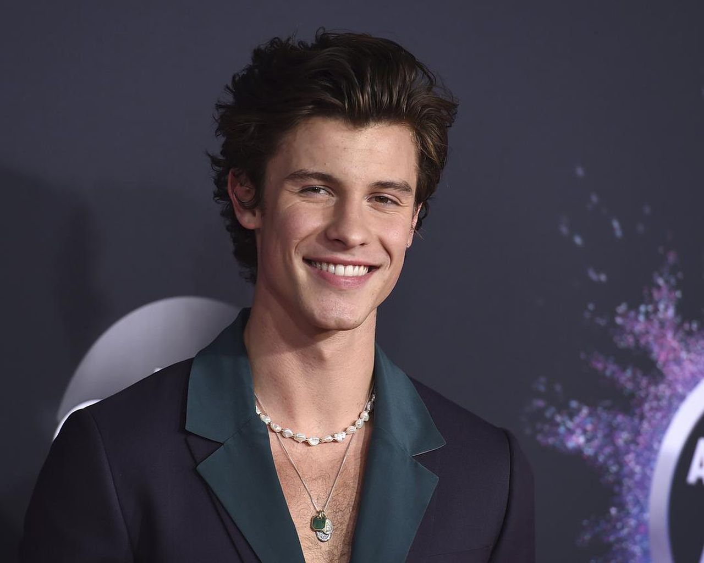

Rohit Sharma - I started watching cricket mainly due to this guy. On 13th December 2017, I first saw Rohit Sharma play and that day he made 208* runs in an ODI match. It was his third double century in ODIs. The way he played those shots made me fall in love with him. And the way he dedicated that special 200 knock to his wife because it was their anniversary. Mannn I just loved that. I have been always a hopeless romantic guy so yeah that was meant to happen. I started following this guy ever since. I watched all highlights of his past 200s and 100s and special games. In next 9 days, he hit the fastest t20i century in just 35 balls. The way he played in that match. He didnt looked any less than a story's main character going on beast mode. And from that day, I have been a die hard fan of Rohit Sharma. I love his personality, his family, everything about him.
Shawn Mendes - As a child, I used to only listen to songs without looking at the artist's name. One day while discussing about songs at school, I thought that maybe I should start looking at artist's names too. And I noticed that I mostly listened to Shawn Mendes. I started searching songs by his name and listened to more of his songs. I felt connected to him through his songs. I started googling stuffs about him and watching his interview. His voice is so sweet. The way he talks about love and about life. I started admiring him. I feel in love with his ideas and pov about life and love. And through his songs I started feeling it more and more. He's the sweetest guy in this world and he is how I wanna be. I love him. He changed my life in many ways.

These two people are like idols to me. I hope I am able to meet at least one of them in my life.